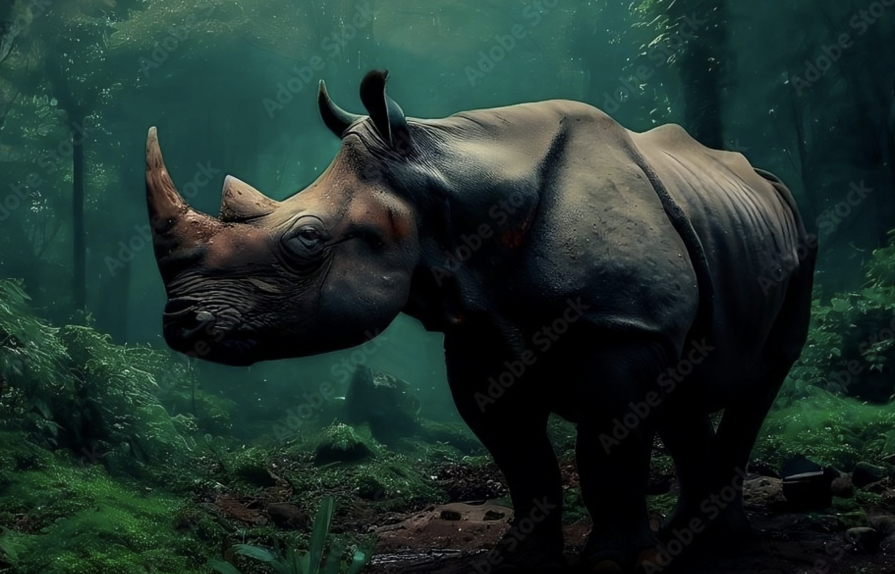

About Us
The Rhino Awareness Foundation is an association committed to the preservation of Javan rhinos, basically endangered animal species. Established in 2023 by a college student passionate about wildlife, Asier Goikoetxea Zabala, our organization works tirelessly to promote the welfare of these majestic animals..
Our Mission:
Our mission is clear: to secure and protect the Javan rhinos and their delicate territory on the island of Java, Indonesia. We are pleased to be a non-benefit association completely committed to the reason for protection.

Collaboration and Partnerships:
We realize that preservation is a group work. We effectively look for associations with other non-benefit organizations that share our passion for natural life and protection. We accept that together we can accomplish a more critical effect and address the difficulties confronting Javan rhinos more successfully.
About Us:
Our association was established by Asier Goikoetxea Zabala, a college understudy energetic about natural life and preservation. His vision and devotion have been instrumental in the foundation and development of the Rhino Awareness Foundation. With your help, we desire to have an impact in safeguarding Javan rhinos.
Join Our Cause:
The Rhino Awareness Foundation couldn't go about its significant responsibilities without the help of individuals like you. We welcome you to join our objective, whether through gifts, chipping in or basically sharing our data to bring issues to light about the predicament of Javan rhinos.
Contact:
Assuming that you might want to look into the Rhino Awareness Foundation, team up with us, or simply ask us questions, feel free to go ahead and reach us. We're here to listen to you and work together for conservation at raf@endangered.com.
Thank you for your interest in our organization and for supporting the cause for the Javan rhinos.